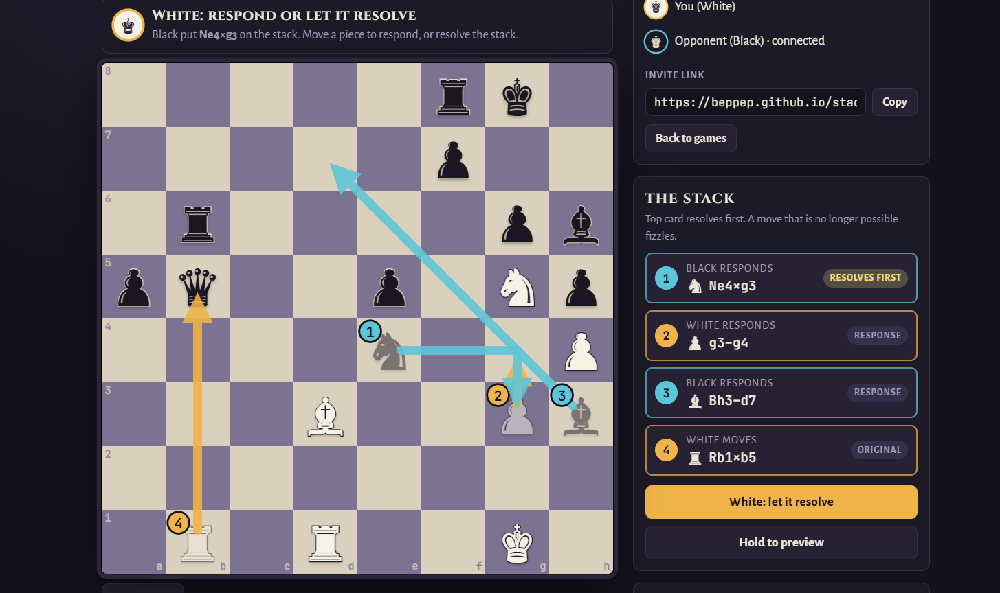
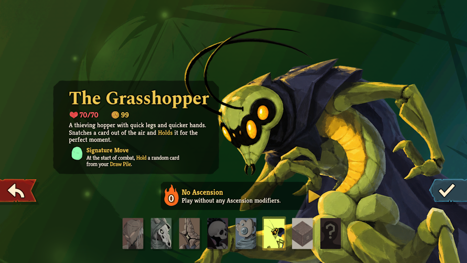

Game design
Mechanics, systems, balance and levels. I approach a design as one big optimization problem: every goal in view at once, and no effort spent on anything that doesn't matter.
Game designer · Mathematician · AI-native developer
I design games, and I build them fast. A competition mathematician's problem solving, a lifetime of making games, and startup experience shipping real work with AI agents.
Open to game design and game development roles. Productive from week one, not month six.
Mechanics, systems, balance and levels. I approach a design as one big optimization problem: every goal in view at once, and no effort spent on anything that doesn't matter.
I orchestrate coding agents to ship real, tested work at startup speed: ten game templates, a 3D rigging pipeline, and an online multiplayer server for a game I invented.
Competition math and research in group theory trained me to dig until I understand what is really going on, and then fix the cause instead of the symptom.
01
An AI-native game engine, a fork of Godot, where agents build games from chat. I worked on the agent side: the skills, tools and harness the agents use, and the games they make.
02


A chess variant where you can respond to a move before it happens. Every move goes on a stack. Your opponent sees it coming and can answer with a move of their own, you can answer that, and so on. The stack resolves in reverse order: the last response first, the original move last. Any illegal move simply fizzles.
A few interesting consequences emerge: you can move into check, and kings can stand next to each other. It all works, and it's a lot of fun to play.
As often in chess variants, you win by capturing the king. Limiting each piece to one move on the stack at a time made pieces easier to capture and removed infinite loops and stalemates. I also removed the check rules entirely: they didn't fit a game where a king can dodge an attack in response, and the game got both simpler and better without them.
Plain HTML, JavaScript and CSS, built with Claude Code. Online play with no sign-in, game clocks, replays, and a minimax AI opponent.
Playing against the AI, I noticed it making mistakes and tracked down why. One was a bug in the pruning, where moves that were cut from the search could still get picked. Another was the evaluation: it counted an attacked piece as lost, even though in Stack-Chess the piece can often just dodge in response, so I changed it to allow that.
Chess engines usually keep searching captures at the end of a line, so that they don't stop in the middle of a trade. I adapted that idea to the stack: responses to moves already on the stack don't count toward the search depth.
03
Designer and developer · Slay the Spire 2 character mod · 100+ subscribers


A full new character: three new mechanics (holding a card to play later, frenzy and flying) and six build-arounds. Over 90 cards, plus relics, potions and dialogue with every Ancient. Made in C# with Harmony patches on the decompiled game.
I optimized for many things at once:
04
Game and level designer · Nominated for Best Mobile Game, Swedish Game Awards · 4.9 stars on Google Play
Growth Spurt started as an idea I made with some friends at a game jam. We liked it enough to keep going, and designed the full game together, all the way to release on both app stores.
As level designer, I built around 60 levels. We secretly control exactly which cards the player is given throughout the level. That way the levels teach the different parts of the game one step at a time, while still feeling like a real challenge.
A daily deduction puzzle, a combo-heavy platform fighter, a roguelike about dancing, a house-building game judged by critics, and more. See them all at beppep.github.io.